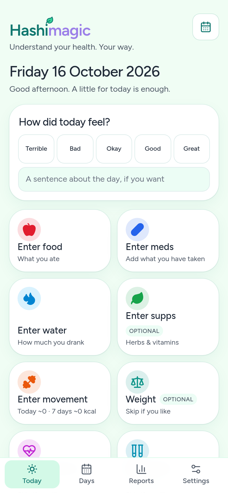
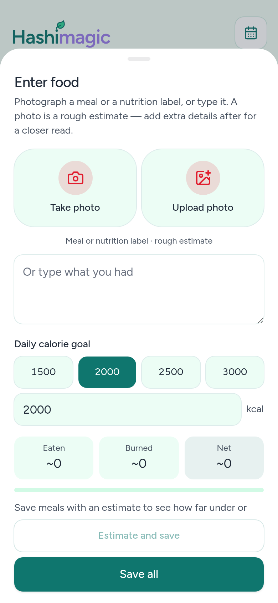
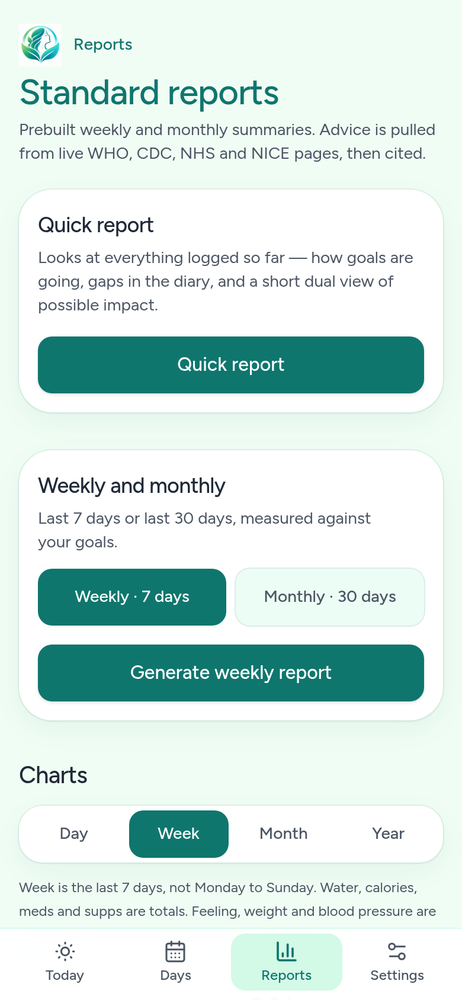
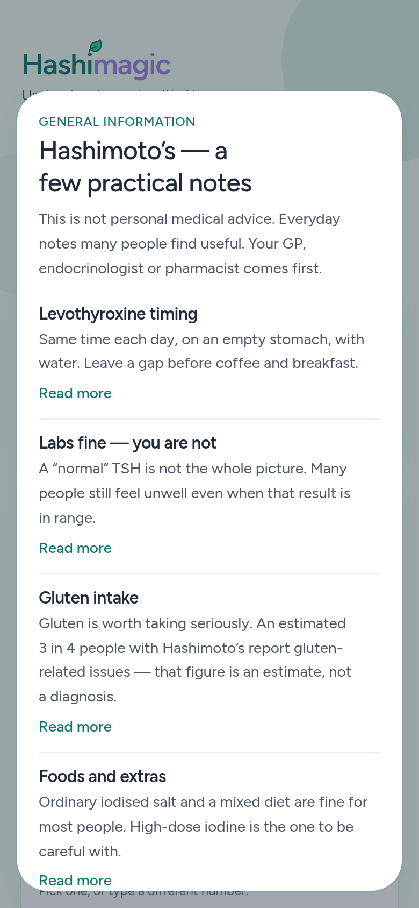

Everything that matters, in one place
Hashimagic brings the daily details of thyroid life together in one clear record.
Medication
Keep your list, tick each dose off as you take it, and add, edit or remove items at any time.
Supplements
Log herbs and vitamins alongside your prescribed medication so nothing is missed.
Food and water
Photograph a meal or nutrition label, or simply type what you had, for a rough estimate. Track water too.
Movement
Record exercise and activity to see how it fits with the rest of your week.
Symptoms and mood
A quick “How did today feel?” check-in, with room for a sentence about the day.
Weight and more
Optional logs for weight, blood pressure, blood tests and sleep, if you want them.
Look back, not just log
Logging is most useful when you can look back on it. Hashimagic keeps medication, supplements, diet, exercise, symptoms and weight side by side, so you can review them over time.
- Day, week, month and year views to see trends over time.
- Weekly and monthly reports measured against your own goals.
- Gaps highlighted so you know where the picture is incomplete.
Evidence carries weight
General information draws on both conventional and alternative sources, with stronger evidence given more weight.
Illustrative only.
Sources are shown, not hidden
Where the app offers general information, it points to where it came from, including UK sources such as the NHS and NICE, so you can read further and discuss it with your clinician.
Evidence-informed, not anti-establishment
Hashimagic respects your clinician and your prescription, while recognising that diet, nutrients and lifestyle matter too. It aims to bridge the two, never to replace professional care.
A look inside




Real screens from the current in-development build. Details may change before launch.